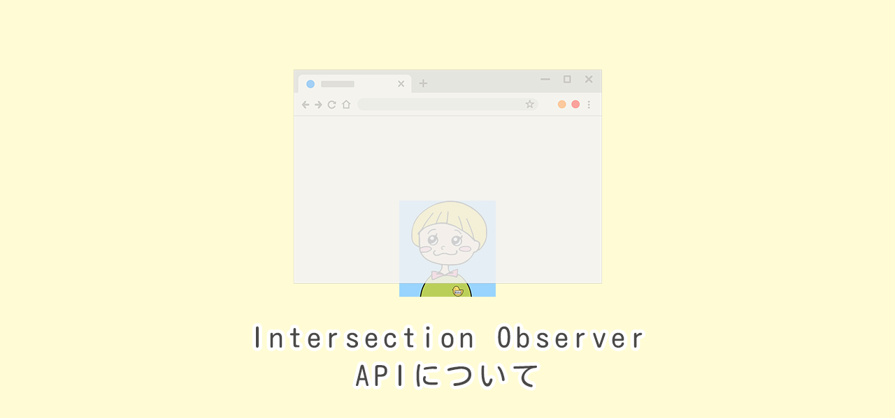
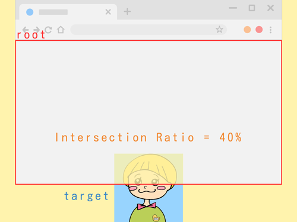

Intersection Observer APIについて
2022/09/04

この記事の目次
Intersection Observer APIとは？
- 要素がスクロールした時に領域とどれだけ交差したかを調べることができるという仕組みです
- 領域はデフォルトではブラウザのウィンドウのサイズになります
- 交差した割合に応じて、要素をふわっと表示させたり、次の要素を読み込んであげたりすることができます
Intersection Observer APIのイメージ

「監視する要素 = target」「領域 = root」「交差した割合 = Intersection Ratio」と言います。
要素が40%くらいrootと交差しているので、Intersection Ratioは40%という計算になります。
Intersection Observer APIのテンプレート
img要素をtargetとしてふわっと表示させる
img {
opacity: 0;
transform: translateY(20px);
transition: opacity .3s, transform .3s;
}
img.appear {
opacity: 1;
transform: translateY(0);
}
const targets = document.querySelectorAll('img');
function callback(entries, obs) {
entries.forEach(entry => {
if (!entry.isIntersecting) {
return;
}
entry.target.classList.add('appear');
obs.unobserve(entry.target);
});
}
const options = {
threshold: 0.2,
};
const observer = new IntersectionObserver(callback, options);
targets.forEach(target => {
observer.observe(target);
});